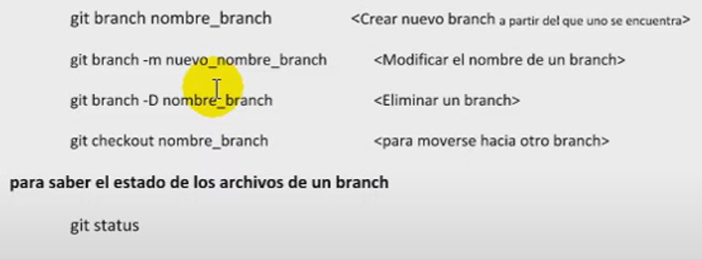
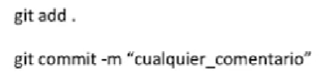
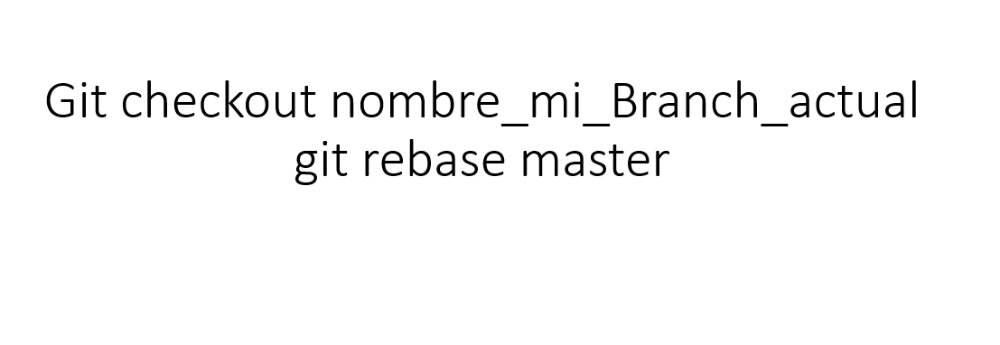
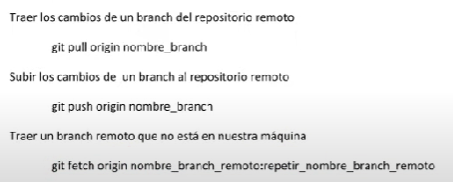
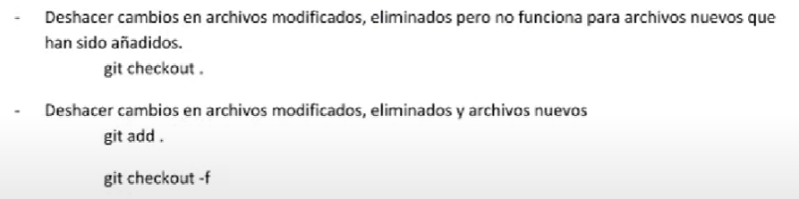
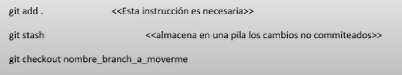
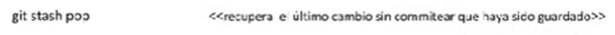
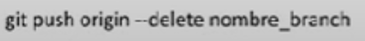

5. USAR UNA HERRAMIENTA DE INTEGRACIÓN CONTINUA Y TENER EN CUENTA EL USO DE COMANDOS:
Los beneficios de usar una herramienta de integración son automatizar y tener más control sobre las revisiones, algunas de ellas son:
Jenkins .
GitLab CI
CircleCI
Bamboo
TeamCity
OPERACIONES SOBRE UN BRANCH:

CONFIRMAR LOS CAMBIOS REALIZADOS SOBRE UN BRANCH:

FUSIONAR LOS CAMBIOS DE LA RAMA PRINCIPAL HACIA LA NUESTRA:

COMANDOS DE OPERACIONES REMOTAS:

DESHACER CAMBIOS NO COMMITEADOS:

MOVERSE A OTRO BRANCH SIN COMMITEAR CAMBIOS:

RECUPERAR CAMBIOS GUARDADOS EN LA PILA "STASH":

REVERTIR UN COMMIT:
ELIMINAR UN BRANCH:
